Quem já não se deparou com a seguinte situação: Preciso publicar um site, bem simples e estático, porem acho carro pagar R$ 19,90 por mês!
Neste post vou explicar de forma prática e simples como hospedar um site sem pagar nada :)
Primeiro precisamos revisar o que é necessário para publicar um site:
- Criar um domínio;
- Criar o site estático HTML/CSS/JS;
- Fazer upload à um servidor de hospedagem ou algum serviço do genero;
- E configurar o domínio do site para escutar no servidor hospedado.
Criar um domínio
A escolha do domínio do site, ou a identidade principal do site, deve ser escolhida com base no nome do serviço, empresa, produto ao algo relacionado ao publico alvo do site. Os domínios mais utilizados no Brasil é .com e .com.br!
Registrando um domínio .com
É possível registrar um domínio em vários sites pela web! O que eu uso, e recomendo, é o Godaddy.com.
O processo de registro é bem simples, escolha o nome, escolha para quantos anos você quer o registro, faça o pagamento e aguarde ser aprovado seu domínio! Um domínio .com custa em média R$ 25,00 por ano.
Depois você ira voltar a este site para configurar o DNS do seu domínio, mas falamos sobre isso depois.
Registrando um domínio .com.br
Para domínio .com.br recomendo registrar direto com os responsáveis do Ponto BR no site Registro.br. O processo também é simples, basta escolher um nome que esteja livre, escolhar o período de registro, efeturar o pagamento e aguardar a liberação! Um domínio .com.br custa em média R$ 30,00 por ano.
Depois você ira voltar a este site para configurar o DNS do seu domínio, mas falamos sobre isso depois.
Crie seu site estático
Criar um site hoje em dia já não é algo complicado e que necessite de muito conhecimento em desenvolvimento Web. Você pode procuar um template gratuíto, ou criar um site com base em um Layout Free! Mas lembre-se, se for criar algo mal feito, nem crie!!! A internet já esta cheio de sites terríveis ;)
Hospedar o site
Aqui vem nosso ponto crucial para este post, onde hospedar seu site?
Existe várias serviços que oferecem hospedagem gratuíta para site, e eu usei muitos destes serviços para testar e avaliar :), o que mais gostei foi o GitHub Pages e vou excplicar o porque desta escolha entre muitos.
Porque hospedar seu site no GitHub Pages?
Acho que o primeiro ponto é o versionamento dos arquivos, como todos os serviços do GitHub são baseados no Git isso facilita e muito nossa tarefa de versionar as versões do site, atualizar, etc! Se você ainda não conhece sobre Git, sugiro você ver este vídeo antes de continuar.
Outro ponto é o fato do GitHub ser gratuíto para projetos públicos, mas como assim? O código fonte do meu site vai ficar aberto para qualquer um ver?
A resposta é sim! Se seu site é estático então não tem problema de ficar aberto, pois se for estático significa que tudo roda do lado do cliente, então o usuário pode ir em "salvar página" e pronto ele terá seu site completo. Sendo assim isso não é um problema para este tipo de projeto.
Então vamos la! Vou mostrar os passos, considerando que você já tenha o site implementado em HTML/CSS/JS, para publicar o site via GitHub Pages.
1
Criando um repositório
Primeiro você precisa criar um repositório com o seu nome de usuário mais .github.io. Isso para site pessoal:
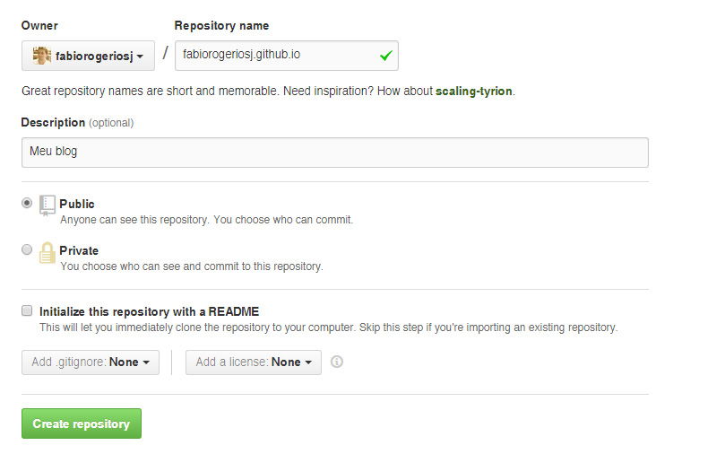
Caso você queira criar um site para outro nome diferente do seu nome de usuário você primeiro deve criar um organização:
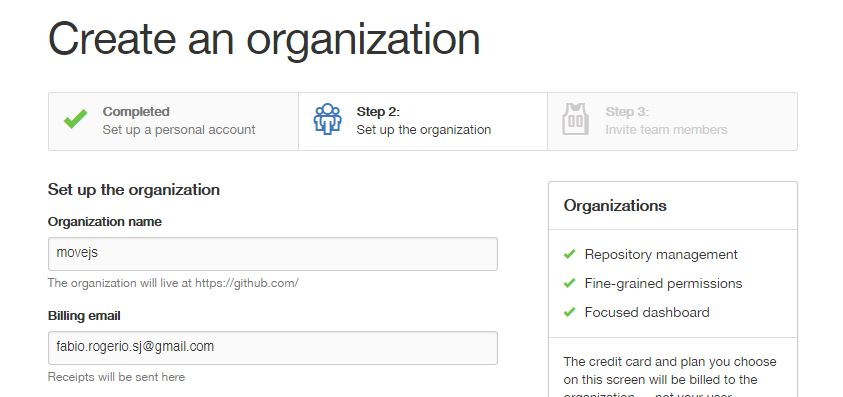
Depois criar o repositório:
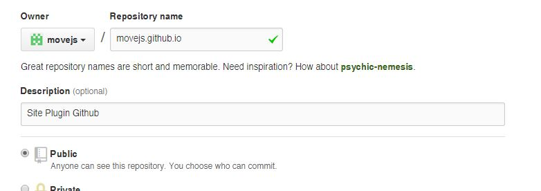
Outra ponto interessante do GitHug Pages é que ele disponibiliza alguns layout prontos para você criar um site! Mas deixamos isso para um outro momento.
2
Clone seu repositório em sua maquina
Agora vamos clonar o repositório para poder inserir os arquivos do site. É possível interagir com o GitHub atravez de software para Windows e Mac, massss a melhor forma, na minha opinião é via terminal.
Para usar o git em sua maquina você deve ter instalado o git, caso não tenha ainda entre no site do Git e veja as instruções com base no seu sistema operacional.
Tendo o software Git instalado vamos clonar o repositório. Após ter criado você verá a URL do seu repositório:
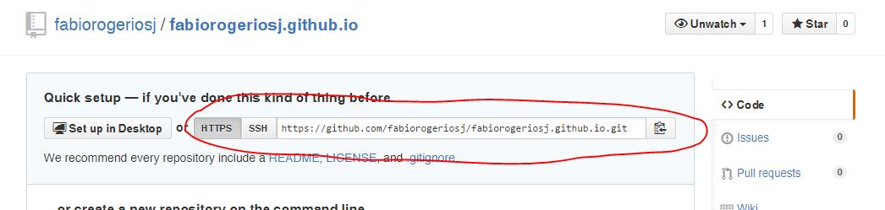
Entre no terminal e digite (trocando a URL para a do seu repositório:
git clone https://github.com/fabiorogeriosj/fabiorogeriosj.github.io.git
Coloque todos seus arquivos nesta pasta e crie um arquivo chamado CNAME com o domínio do seu site:
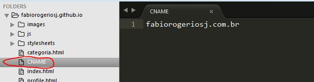
3
Atualizando repositório
Agora vamos comitar os arquivos alterados, em outras palavras, vamos atualizar o respositório nas núvens, digite no terminal dentro da pasta do seu projeto:
git add --all
git commit -m "Atualizando site"
dit push -u origin master
Será solicitado seu e-mail e senha de acesso ao GitHub.
4
Conferir escuta de domínio
Após comitar os arquivos aguarde uns 5 minutos e vá em Setting do seu repositório e veja se o domínio já esta sendo escutado pelo GitHub:
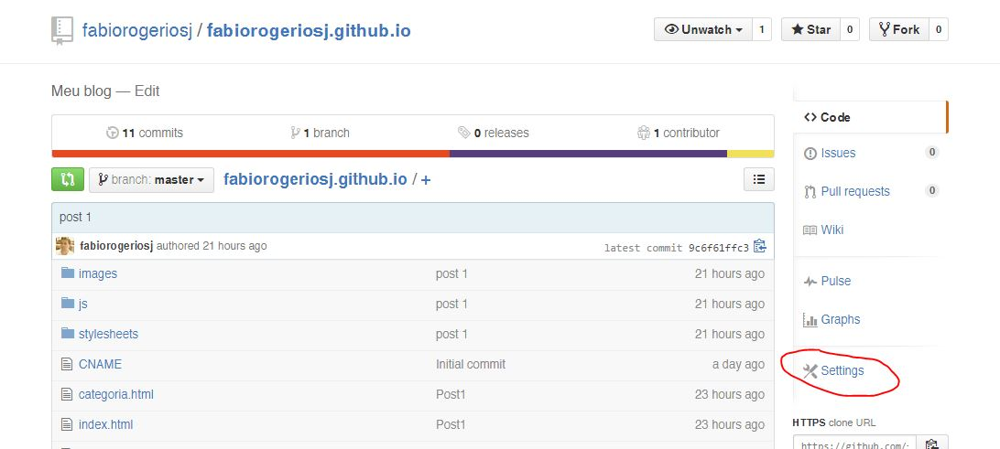
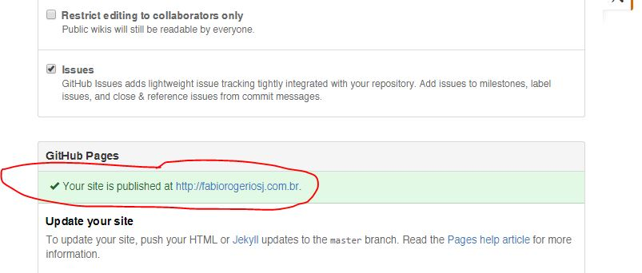
4
Configurando domínio
Se você entrar na URL seuusuariogit.github.io você verá que foi redirecionado para o seu domínio configurado em CNAME! Agora temos que configurar o domínio registrado para direcionar para os servidores do GitHub!
Configurando .com
Domínio .com é o mais simples e não precisa pagar nada para ter um DNS, entre no painel do Godaddy.com e vai em gerenciar meus domínios:
Em "Arquivo de Zona DNS" crie dois registro (se já exisitr altere) um como Host:
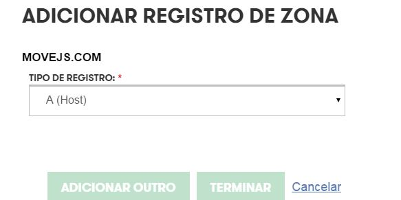
Com os seguintes dados:
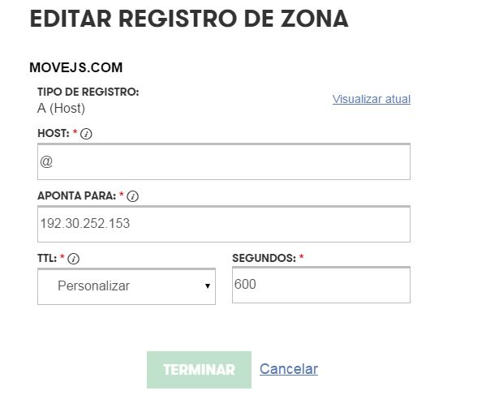
E um outro registro para CNAME com os seguintes dados:
Em "Apontar para" você deve colocar o nome do seu repositório.
Aguarde alguns minutos para o DNS propagar e teste seu site, você veja que ele estará respondendo no domínio criado :)
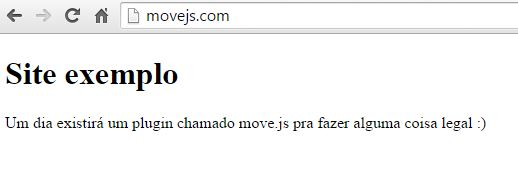
Configurando .com.br
Até um tempo atraz o Registro.br não disponibilizava um servidor DNS, mas nossos problemas terminaram, agora é possível usar o próprio servidor deles :)
Entre no painel do Registro.br e clique no domínio que você criou:
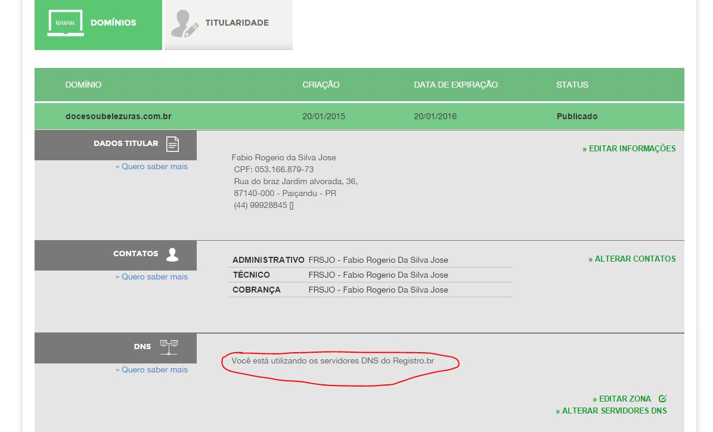
Clique em modo avançado:
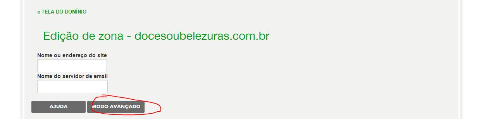
Adicione duas entradas, uma com o tipo "A" com o campo acima do domínio vazio para o endereço: 192.30.252.153. E outro com o tipo CNAME com o campo "www" para o nome do seu repositório:
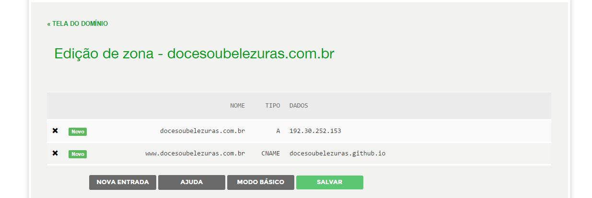
Aguarde até o registro.br propagar seu DNS e pronto, seu site estará no ar :)
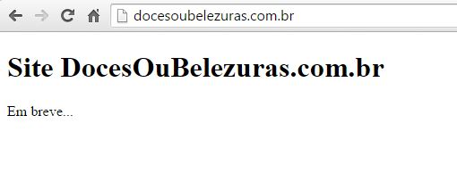